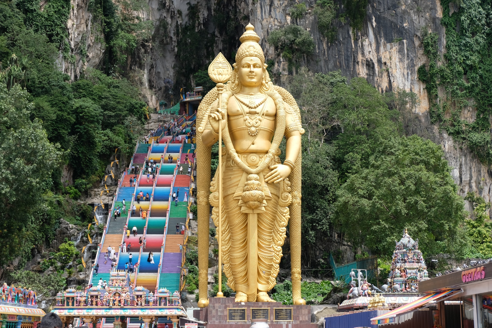
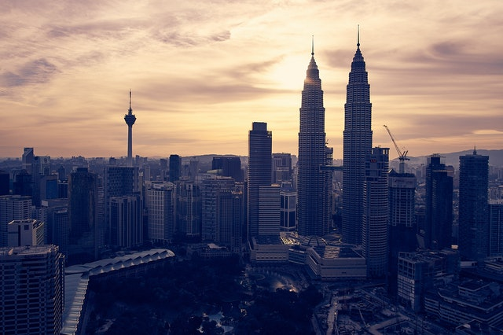

Kuala Lumpur
Fundada el 1857, Kuala Lumpur és una ciutat relativament nova i no té una història tant rica com George Town o Malacca. Després d'uns primers anys complicats, Kuala Lumpur va començar a prosperar i va convertir en capital dels estats federats de Malàisia el 1896. La independència de Malàisia es va declarar el 1957 davant de grans multituds al que després es va anomenar Stadium Merdeka (Estadi de la Independència), i Kuala Lumpur va continuar sent la capital de la nova nació. El boom econòmic de la dècada de 1990 vaconvertir a KLen una ciutat moderna, plena de gratacels i mitjans de transport moderns.
Idioma
Com era d’esperar a la capital de Malàisia, la llengua nacional és Bahasa Malaysia, és gairebé parlada i entesa per tothom. L’anglès es parla àmpliament a les principals ciutats i pobles de Malàisia.
Què veure
KL acull una increïble varietat de delícies arquitectòniques. Els edificis colonials britànics més antics es troben al centre de la ciutat i inclouen les antigues oficines de la Secretaria Colonial (actual edifici Sultan Abdul Samad) a la plaça Merdeka i l'antiga estació de ferrocarril de Kuala Lumpur. Combinen arquitectura de la Gran Bretanya i el nord d'Àfrica. A prop de la plaça Merdeka hi ha Masjid Jamek, una encantadora mesquita d'estil morisc situada en una confluència al riu Klang. La mesquita nacional, Masjid Negara, (1965) celebra les ambicions de la recentment independent Malàisia. El monument nacional als bonics jardins del llac està inspirat en el Memorial Iwo Jima a Arlington, Virgínia. El jardí d'escultures de l'ASEAN és a prop. També es troba als jardins del llac Carcosa Seri Negara, l’antiga residència de l’alt comissari britànic, que ara alberga un hotel exclusiu i sales de te d’estil colonial. Tot i que alguns edificis del gran triangle daurat, com la torre KL, són còpies no inspirades d’altres estructures famoses, les Torres Bessones Petronas són realment meravelloses.
